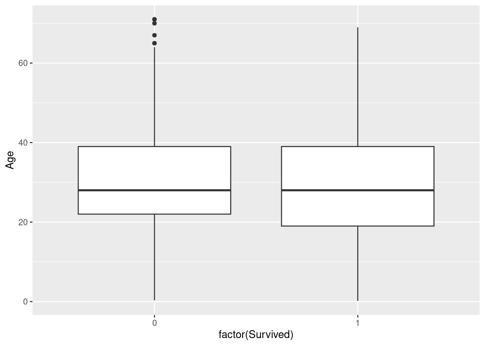
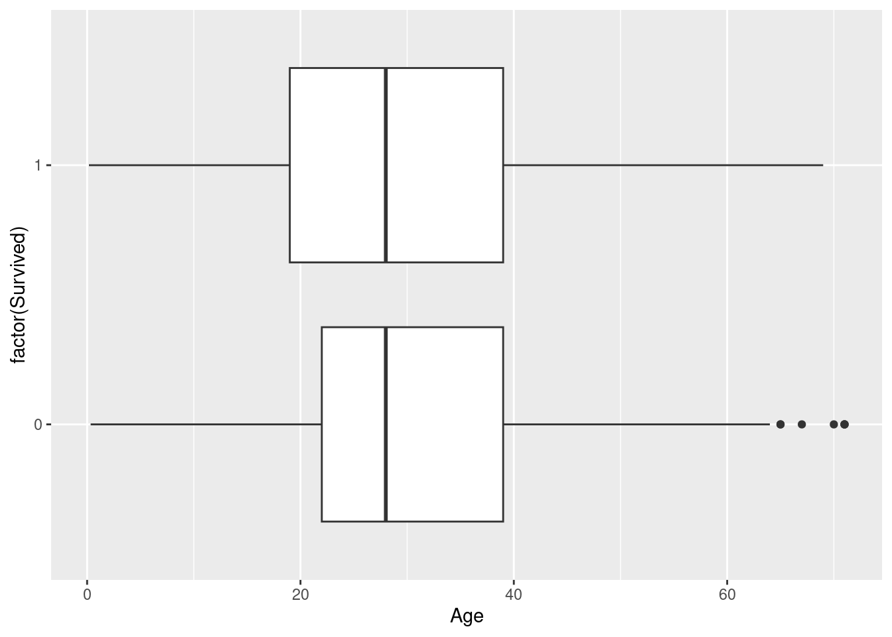
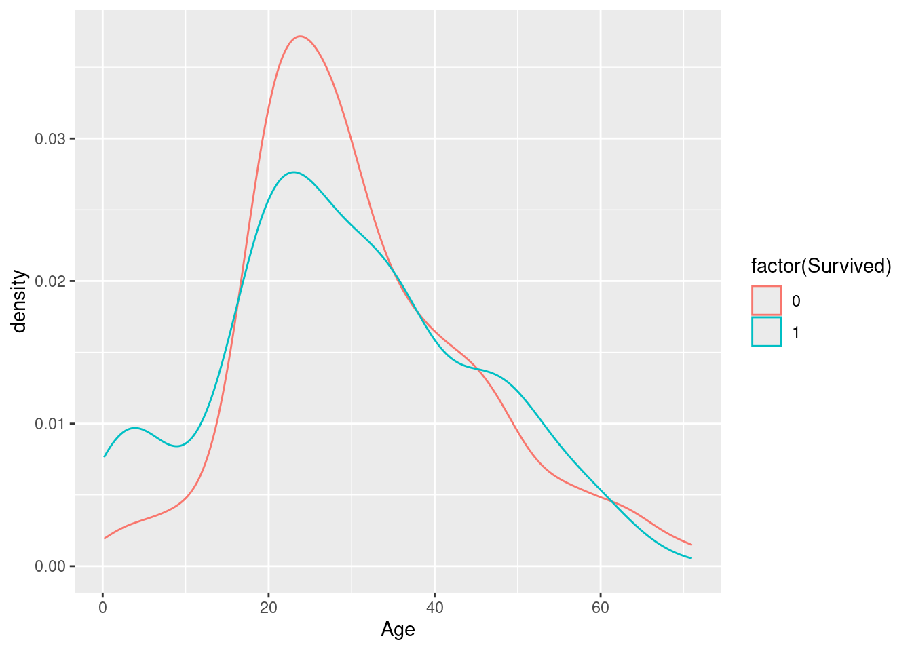
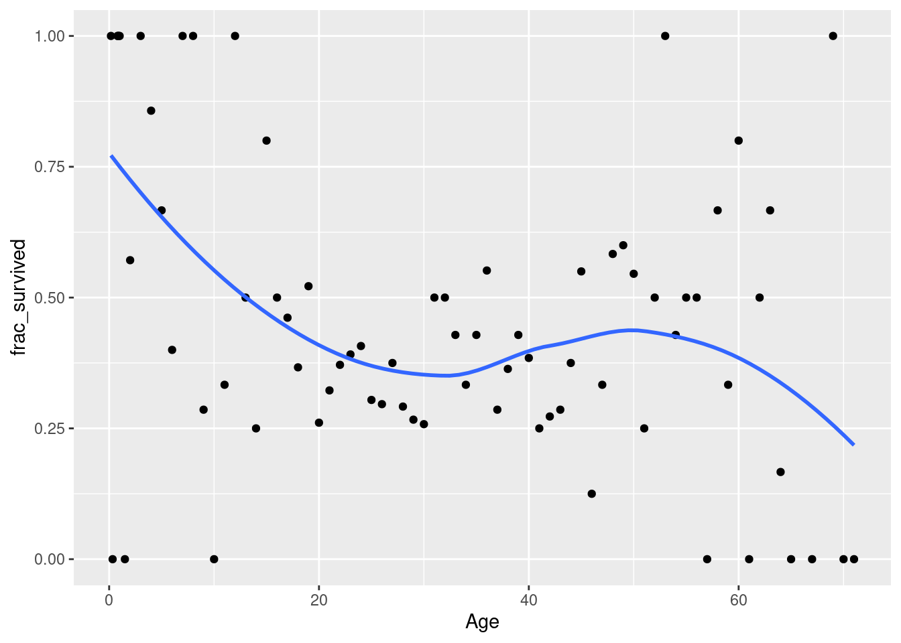
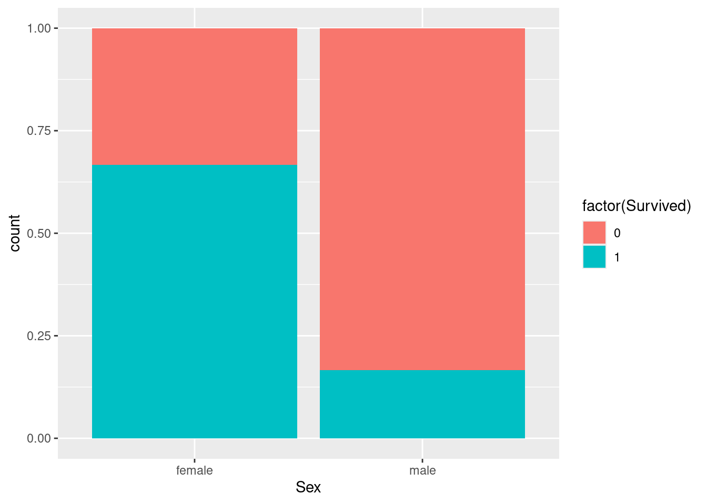
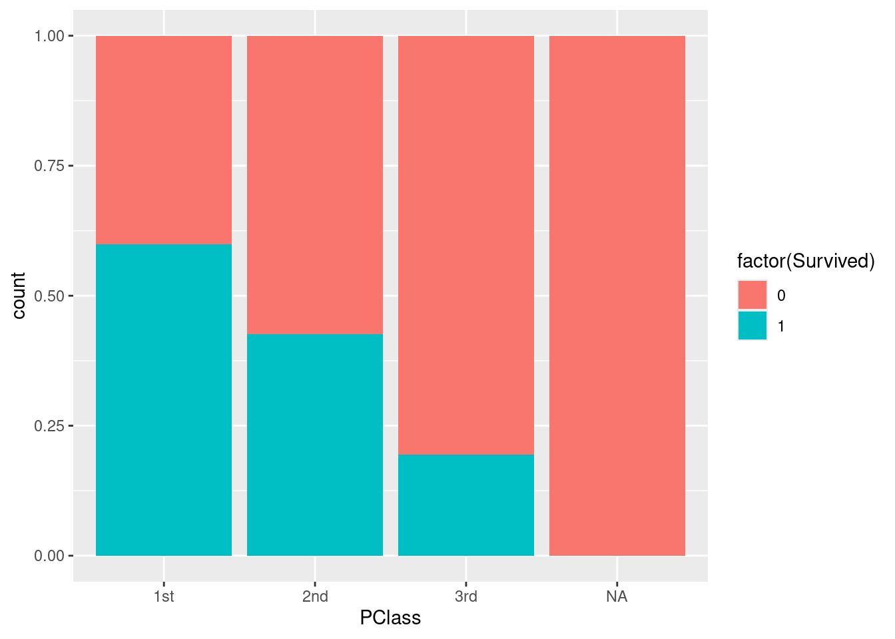
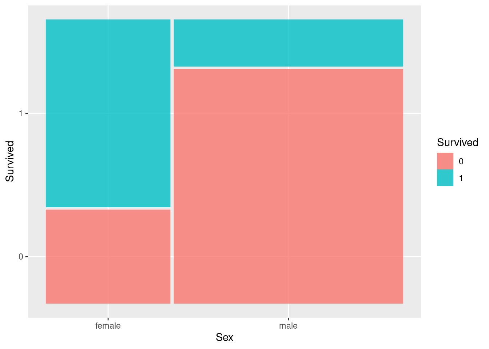
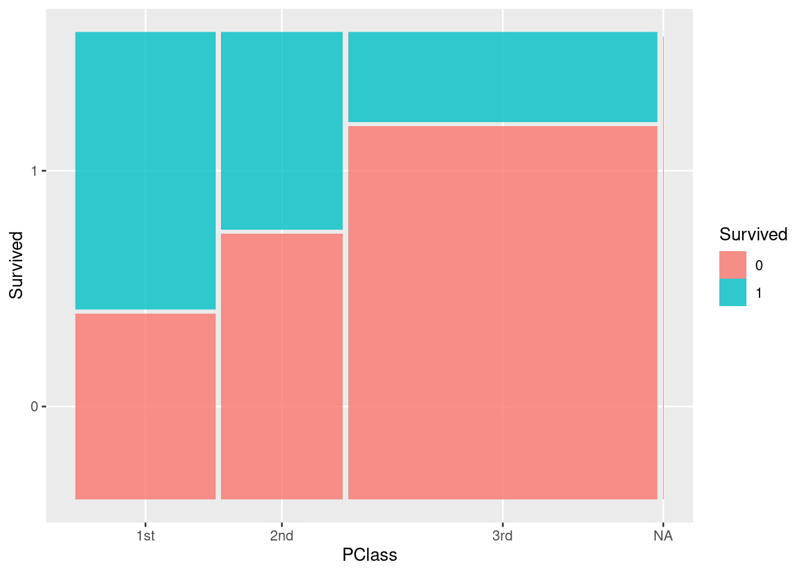

library(readr)
library(ggplot2)
library(dplyr)
library(stringr)
firststeps <- read_csv("https://mac-stat.github.io/data/firststeps.csv") %>%
mutate(firstchild = ifelse(parity == 0, "Yes", "No"), # Is this the first child this parent has had?
low_bwt = ifelse(bwt < 2500, "low", "not low"),
preterm = ifelse(gestation < 37, "Yes", "No")) # short gestational periodSimple logistic regression
Notes
Learning goals
By the end of this lesson, you should be able to:
- Explain the differences between linear regression and logistic regression for modeling binary outcomes
- Construct simple logistic regression models in R
- Interpret coefficients in simple logistic regression models
- Use simple logistic regression models to make predictions
- Describe the form (shape) of relationships on the log odds, odds, and probability scales
Readings and videos
Choose either the reading or the videos to go through before class.
- Reading: Sections 4.1-4.3 in the STAT 155 Notes
- Video: Logistic regression (slides)
Warm-up: probability and odds
Context: To begin formally learning about probabilities and odds, we’ll be exploring a dataset containing information on 2,500 singleton (i.e. not twins) births in King County, Washington in 2001. Each row contains information from one birth parent, and there are no birth parents included in the dataset more than once.
The main research question this study aimed to answer was whether the First Steps program in King County improved birth outcomes for women from socioeconomically disadvantaged backgrounds. We’ll attempt to answer this research question using the information available to us as we go!
The variables in this dataset we’ll look at more closely for each birth parent are:
age: age of birth parent at time of birth (years)parity: number of children the birth parent has given birth to beforemarried: indicator for whether the birth parent is currently married (1 = yes, 0 = no)bwt: birthweight of the child (in grams)smokeN: number of cigarettes smoked per day during pregnancydrinkN: number of alcoholic drinks consumed per day during pregnancyfirstep: indicator for whether the birth parent participated in the “First Steps” pregnancy programgestation: number of weeks at which birth parent gave birth
Run the code below to read in the firststeps data, and create a few new variables that we’ll explore as well.
Exercise 1: Exploring First Steps enrollment and Gestational Age
A baby born prior to 37 weeks is considered premature. In figuring out whether we have evidence that the First Steps program is associated with better birth outcomes than those not in the First Steps program, we can look at whether the individuals in the program are more likely to have preterm babies.
Below, we make a 2x2 table in R:
# 2x2 Table: preterm vs. First Steps
firststeps %>%
count(preterm, firstep)You may be wondering why this is called a 2x2 table, when it looks as though the table has four rows and three columns. The data can be re-arranged (and usually is, in a formal report) as follows…
table(firststeps$preterm, firststeps$firstep)… but it’s much cleaner to code up the original way!
How many birth parents were enrolled in the First Steps program? Which rows did you use to calculate this number?
What percentage of people in the study were enrolled in the First Steps program? Recall: there were 2500 participants! You can confirm this by adding up the entire third column of the table
How many birth parents who were enrolled in First Steps had a premature baby?
What percentage of birth parents in First Steps had a premature baby? Think carefully about the numerator and denominator you use to calculate this!
What percentage of birth parents who had a premature baby were enrolled in First Steps? Think carefully about the numerator and denominator you use to calculate this!
Congratulations! If you’ve made it to this point, you already intuitively know what marginal and conditional probabilities are. Formally,
a marginal probability, denoted \(P(A)\) for an event \(A\), is the probability that \(A\) occurs overall. You calculated the marginal probability that people were enrolled in First Steps in part (b)! In this case, the denominator used to calculate the probability was the total number of people in the study.
a conditional probability, denoted \(P(A | B)\) for events \(A\) and \(B\), is the probability that \(A\) occurs given that event \(B\) occurs. You calculated the conditional probability that a premature baby was born given that a parent was in First Steps in part (d)! In this case, the denominator used to calculate the probability was the total number of birth parents in the First Steps program. You also calculated a conditional probability in part (e).
Using formal probability notation, write the probabilities you calculated in parts (b), (d), and (e) as
- \(P(\text{First Steps})\) = ___
- \(P(\text{Preterm} | \text{First Steps})\) = ___
- \(P(___ | ___)\) = __
Note that the conditional probabilities calculated in parts (d) and (e) are not the same! This is because which event you condition on alters the denominator, and the event you’re interested in alters the numerator.
- To determine if gestational age differed by enrollment in First Steps, we’ll want to calculate the conditional probability that a baby is born prematurely given First Steps enrollment (done!), and given that a parent is not enrolled in First Steps. Use the 2x2 table to calculated this conditional probability.
\(P(\text{Preterm} |\text{Not in First Steps})\) = ___
- A ratio of conditional probabilities, where the conditioning event is the same for both, tells us how many times more likely an event is to occur for one group compared to another. Calculate how many times more likely a birth parent enrolled in First Steps is to have a premature baby compared to birth parents not enrolled in First Steps.
\[ \frac{(\text{Preterm} | \text{First Steps})}{P(\text{Preterm} | \text{Not in First Steps})} = \]
Write a two-sentence summary, appropriate for a general audience, summarizing your results in terms of a ratio of probabilities. Does gestational age appear to differ greatly by First Steps enrollment? What does this imply about the effectiveness of the First Steps program, if anything?
To go along with your summary, let’s make a visualization! There are three basic options for visualization two categorical variables. All are perfectly valid, but some may be more useful to read than others, and display different information.
You’ll see one other fancier option (called a mosaic plot) in the next activity.
# Side-by-side bar chart
firststeps %>%
ggplot(aes(firstep, fill = preterm)) +
geom_bar(position = "dodge") +
theme_classic()
# Stacked bar chart
firststeps %>%
ggplot(aes(firstep, fill = preterm)) +
geom_bar() +
theme_classic()
# Stacked relative frequency bar chart
firststeps %>%
ggplot(aes(firstep, fill = preterm)) +
geom_bar(position = "fill") +
theme_classic()Bonus Question: Which of the above three plots allows you to directly see the conditional probabilities we calculated previously?
Place your answer here
Exercise 2: Exploring First Steps enrollment and Low birthweights
Another birth outcome we can consider when comparing those enrolled in the First Steps program to those not enrolled is birth weight. A baby is considered to have low birth weight when birth weight is less than 2500 grams.
- Fill in the code below to make a table comparing
low_bwttofirsteps.
# 2x2 Table: low_bwt vs. First Steps- Using the table from part (a), calculate the following conditional probabilities:
\(P(\text{Low birth weight} | \text{First Steps})\) = ___
\(P(\text{Normal birth weight} | \text{First Steps})\) = ___
\(P(\text{Low birth weight} | \text{Not in First Steps})\) = ___
\(P(\text{Normal birth weight} | \text{Not in First Steps})\) = ___
An additional numerical summary that is often useful when working with indicator variables is odds. Odds are defined as
\[ Odds = \frac{p}{1 - p} \]
where \(p\) is the probability that an event occurs. Therefore, if we know \(p\), we can calculate the odds that an event happens! Similarly, if we know the odds, we can calculate \(p\) using
\[ p = Odds / (1 + Odds) \]
We can also calculate odds from our 2x2 (or 3x2, 4x2, …) tables. In colloquial terms, probabilities are “yes”’s over “total”’s, and odds are “yes”’s over “no’s”. In pseudo-math:
\[ p = \frac{Yes}{Total}, \quad Odds = \frac{Yes}{No} \] We’ll see why odds are especially useful when we have binary outcome variables in a regression model in the next activity. For now, note that they’re also commonly used in lots of contexts: sports, gambling, case-control studies, etc.
- Using your answer to part (b), calculate the following odds
\(Odds(\text{Low birth weight} | \text{First Steps})\) = ___
\(Odds(\text{Normal birth weight} | \text{First Steps})\) = ___
\(Odds(\text{Low birth weight} | \text{Not in First Steps})\) = ___
\(Odds(\text{Normal birth weight} | \text{Not in First Steps})\) = ___
- A ratio of odds (called an odds ratio, unsurprisingly) tells us how many times higher or greater the odds are that an event occurs, comparing one group to another. This might sound irritatingly circular. The key here is that while odds ratios do allow us to compare binary/indicator outcomes from one group to one another, they do not tell us how much more likely an event is to occur comparing those same groups. This is distinct from ratios of probabilities!
Calculate the ratio of the odds of having a low-birth-weight baby, comparing those in the First Steps program to those not in the First Steps program (i.e., how many times higher/lower is the odds of having a low-birth-weight baby among those in First Steps as compared to those not in First Steps?)
Write a two-sentence summary, appropriate for a general audience, summarizing your results in terms of an odds ratio. Does birth weight appear to differ greatly by First Steps enrollment? What does this imply about the effectiveness of the First Steps program, if anything?
To go along with your summary, add code below to make one of the three visualization options we tried out in Exercise 1.
# Insert code here...Exercise 3: Conditional vs. Marginal probabilities
Suppose we select a person at random from the entire global population. For each of the following probabilities, which do you think is bigger? Explain your reasoning.
- P(lung cancer) or P(lung cancer | smoker)
Your response here
- P(likes McDonald’s) or P(likes McDonald’s | vegetarian)
Your response here
- P(smart | Mac grad) or P(Mac grad | smart)
Your response here
Exercise 4: Probability practice
Let’s explore whether birthweight of a baby varies by whether or not it was the first child that a mother had, and whether this relationship differs by First Steps enrollment. We make a table below:
firststeps %>%
count(firstchild, low_bwt, firstep)- What is the probability that a mother enrolled in First steps who is having their first child, has a baby who is born at a low birthweight? Calculate your answer, and write it using formal probability notation.
P(___ | ___) = ?
- What is the probability that a mother not enrolled in First steps who is having their first child, has a baby who is born at a low birthweight? Calculate your answer, and write it using formal probability notation.
P(___ | ___) = ?
- What is the probability that a mother’s first child has a low birthweight? Calculate your answer, and write it using formal probability notation.
P(___ | ___) = ?
- How many times more likely is a child to be born at a low birthweight, comparing children who are the first born to those not first born?
P(___ | ) / P( | ___) = ?
File organization: Save this file in the “Activities” subfolder of your “STAT155” folder.
Exercises
Context: The Titanic was a British passenger ship that famously sank in 1912 after hitting an iceberg in the North Atlantic Ocean. Approximately 2200 passengers were on board the Titanic, and it’s estimated that 1500 of them did not survive the crash. Historians have worked diligently to collect data on the passengers that were aboard the Titanic.
We have data for 1313 passengers, where the following information is available for each passenger:
Name: namePClass: ticket class (1st, 2nd, 3rd)Age: age (years)Sex: binary sex (female, male)Survived: indicator that the passenger survived (1 = survived, 0 = died)
Our question of interest is: how do different factors relate to survival?
In the Console, run install.packages("ggmosaic") to install the ggmosaic package that we’ll be using to make a specialized type of plot.
library(readr)
library(ggplot2)
library(ggmosaic)
library(dplyr)
titanic <- read_csv("https://mac-stat.github.io/data/titanic.csv")Exercise 1: Exploring age
Did younger passengers tend to have higher survival rates than older passengers?
Visualizing the relationship between a binary response and a quantitative predictor can be tricky. We will take a few approaches here.
- Create a boxplot where one box corresponds to the age distribution of survivors and the second to that of non-survivors.
- Create density plots with separate colors for the survivors and non-survivors.
- The remainder of the code below creates a plot of the fraction who survived at each age. (Since we have a large data set and multiple (though sometimes not many) observations at most ages, we can manually calculate the survival fraction.
After inspecting the plots, summarize what you learn.
# Create a boxplot
# Note that you'll need to force R to view Survived as a binary categorical variable by using x = factor(Survived) instead of just x = Survived in the aes() part of your plot
# Create a density plot (you'll need to use factor(Survived) again)
# Use the code below to create a plot of the fraction who survived at each age
titanic_summ <- titanic %>%
group_by(Age) %>%
summarize(frac_survived = mean(Survived))
ggplot(titanic_summ, aes(x = Age, y = frac_survived)) +
geom_point() +
geom_smooth(se = FALSE)Exercise 2: Exploring sex and ticket class
Were males or females more likely to survive? Did 1st class passengers tend to survive more than 2nd and 3rd class passengers?
The code below creates plots that allow us to explore how Sex and PClass relate to survival. The first two plots are standard bar plots that use color to indicate what fraction of each group survived. The last two plots are mosaic plots that are much like the standard bar plots, but the width of the bars reflects the distribution of the x-axis variable. (The widest bar is the most prevalent category.)
Summarize what you learn about the relationship between sex, ticket class, and survival.
# Standard bar plots
ggplot(titanic, aes(x = Sex, fill = factor(Survived))) +
geom_bar(position = "fill")
ggplot(titanic, aes(x = PClass, fill = factor(Survived))) +
geom_bar(position = "fill")
# Mosaic plots
ggplot(data = titanic %>% mutate(Survived = as.factor(Survived))) +
geom_mosaic(aes(x = product(Sex), fill = Survived))
ggplot(data = titanic %>% mutate(Survived = as.factor(Survived))) +
geom_mosaic(aes(x = product(PClass), fill = Survived))Exercise 3: Linear regression model
For now we will focus on exploring the relationship between (ticket) class and survival.
Let’s tabulate survival across classes. We can tabulate across two variables by providing both variables to count():
titanic %>%
count(PClass, Survived)- Use the
count()output to fill in the following contingency table:
| Class | Died | Survived | Total |
|---|---|---|---|
| 1st Class | ___ | ___ | ___ |
| 2nd Class | ___ | ___ | ___ |
| 3rd Class | ___ | ___ | ___ |
| Total | ___ | ___ | ___ |
- Using your table, estimate the following:
- the probability of surviving among 1st class passengers
- the probability of surviving among 2nd class passengers
- the probability of surviving among 3rd class passengers
- the difference in the probability of surviving, comparing 2nd class passengers to 1st class passengers (i.e., how much lower is the probability of 2nd class passengers as compared to 1st class passengers?)
- the difference in the probability of surviving, comparing 3rd class passengers to 1st class passengers (i.e., how much lower is the probability of 3rd class passengers as compared to 1st class passengers?)
- After fitting the linear regression model below, write out the model formula using correct notation. Explain carefully what it means to talk about the expected/average value of a binary variable.
lin_mod <- lm(Survived ~ PClass, data = titanic)
summary(lin_mod)- Write an interpretation of each of the coefficients in your linear regression model. How do your coefficient estimates compare to your answers in part b?
Exercise 4: Logistic regression model (categorical predictor)
- Refer back to your contingency table from Exercise 3a. Using your table, estimate the following:
- the odds of surviving among 1st class passengers
- the odds of surviving among 2nd class passengers
- the odds of surviving among 3rd class passengers
- the ratio of the odds of surviving, comparing 2nd class passengers to 1st class passengers (i.e., how many times higher/lower is the odds of survival among 2nd class passengers as compared to 1st class passengers?)
- the ratio of the odds of surviving, comparing 3rd class passengers to 1st class passengers
- After fitting the logistic regression model below, write out the model formula using correct notation.
log_mod <- glm(Survived ~ PClass, data = titanic, family = "binomial")
coef(summary(log_mod))- Write an interpretation of each of the exponentiated coefficients in your logistic regression model. Think carefully about what we are modeling when we fit a logistic regression model. How do these exponentiated coefficient estimates compare to your answers in part a?
Exercise 5: Logistic regression model (quantitative predictor)
Now we will explore how to interpret a quantitative predictor in a logistic regression model.
- After fitting the logistic regression model below, write out the model formula using correct notation.
log_mod <- glm(Survived ~ Age, data = titanic, family = "binomial")
coef(summary(log_mod))- Write an interpretation of each of the exponentiated coefficients in this logistic regression model.
Exercise 6: Linear vs. logistic modeling
To highlight a key difference between linear vs. logistic modeling, consider the following linear and logistic regression models of survival with sex and age as predictors in addition to ticket class.
lin_mod2 <- lm(Survived ~ PClass + Sex + Age, data = titanic)
coef(summary(lin_mod2))
log_mod2 <- glm(Survived ~ PClass + Sex + Age, data = titanic, family = "binomial")
coef(summary(log_mod2))Use the linear regression model to predict the probability of survival for Rose (a 17 year old female in 1st class) and Jack (a 20 year old male in 3rd class). Show your work.
Now use the logistic regression model to predict the survival probability for Rose and Jack. Show your work. (Hint: use the logistic regression model to obtain the predicted log odds, exponentiate to get the odds, and then convert to probability.)
Comment on differences that you notice in the predictions from parts a and b.
Reflection
What binary outcomes might be relevant in your project? What predictor(s) could be relevant in a logistic regression model for that outcome?
Response: Put your response here.
Solutions
Exercise 1: Exploring age
The boxplot doesn’t clearly indicate a difference in the age distributions across survivors and non-survivors, but we do notice from the density plot that there is a greater density of younger passengers among the survivors. We also see from the last plot that younger passengers tend to have a higher survival chance.
# Create a boxplot
ggplot(titanic, aes(x = factor(Survived), y = Age)) +
geom_boxplot()
# Can flip the boxplot on its side too
ggplot(titanic, aes(y = factor(Survived), x = Age)) +
geom_boxplot()
# Create a density plot
ggplot(titanic, aes(x = Age, color = factor(Survived))) +
geom_density()
# Use the code below to create a plot of the fraction who survived at each age
titanic_summ <- titanic %>%
group_by(Age) %>%
summarize(frac_survived = mean(Survived))
ggplot(titanic_summ, aes(x = Age, y = frac_survived)) +
geom_point() +
geom_smooth(se = FALSE)
Exercise 2: Exploring sex and ticket class
- Females were more likely to survive than males.
- 1st class was most likely to survive, followed by 2nd then 3rd class.
# Standard bar plots
ggplot(titanic, aes(x = Sex, fill = factor(Survived))) +
geom_bar(position = "fill")
ggplot(titanic, aes(x = PClass, fill = factor(Survived))) +
geom_bar(position = "fill")
# Mosaic plots
ggplot(data = titanic %>% mutate(Survived = as.factor(Survived))) +
geom_mosaic(aes(x = product(Sex), fill = Survived))
ggplot(data = titanic %>% mutate(Survived = as.factor(Survived))) +
geom_mosaic(aes(x = product(PClass), fill = Survived))
Exercise 3: Linear regression model
titanic %>%
count(PClass, Survived)
## # A tibble: 7 × 3
## PClass Survived n
## <chr> <dbl> <int>
## 1 1st 0 129
## 2 1st 1 193
## 3 2nd 0 160
## 4 2nd 1 119
## 5 3rd 0 573
## 6 3rd 1 138
## 7 <NA> 0 1| Class | Died | Survived | Total |
|---|---|---|---|
| 1st Class | 129 | 193 | 322 |
| 2nd Class | 160 | 119 | 279 |
| 3rd Class | 573 | 138 | 711 |
| Total | 862 | 450 | 1312 |
- the probability of surviving among 1st class passengers: 193/322 = 0.599
- the probability of surviving among 2nd class passengers: 119/279 = 0.427
- the probability of surviving among 3rd class passengers: 138/711 = 0.194
- the difference in the probability of surviving, comparing 2nd class passengers to 1st class passengers (i.e., how much lower is the probability of 2nd class passengers as compared to 1st class passengers?): 119/279 - 193/322 = -0.173
- the difference in the probability of surviving, comparing 3rd class passengers to 1st class passengers (i.e., how much lower is the probability of 3rd class passengers as compared to 1st class passengers?): 138/711 - 193/322 = -0.405
- This model can be written as: \(E[Survived | PClass] = \beta_0 + \beta_1 PClass2nd + \beta_2 PClass3rd\).
- In the context of a binary variable, the expected value/average is the same as the probability that the variable equals one. To see an example of this, calculate the average of this list of 0’s and 1’s: (0,0,1,1,0,1,0,1). Now calculate the proportion of 1’s. What do you notice?
- This means that we can also write this model as follows: \(P[Survived = 1 | PClass] = \beta_0 + \beta_1 PClass2nd + \beta_2 PClass3rd\)
lin_mod <- lm(Survived ~ PClass, data = titanic)
summary(lin_mod)
##
## Call:
## lm(formula = Survived ~ PClass, data = titanic)
##
## Residuals:
## Min 1Q Median 3Q Max
## -0.5994 -0.1941 -0.1941 0.4006 0.8059
##
## Coefficients:
## Estimate Std. Error t value Pr(>|t|)
## (Intercept) 0.59938 0.02468 24.284 < 2e-16 ***
## PClass2nd -0.17286 0.03623 -4.772 2.03e-06 ***
## PClass3rd -0.40529 0.02975 -13.623 < 2e-16 ***
## ---
## Signif. codes: 0 '***' 0.001 '**' 0.01 '*' 0.05 '.' 0.1 ' ' 1
##
## Residual standard error: 0.4429 on 1309 degrees of freedom
## (1 observation deleted due to missingness)
## Multiple R-squared: 0.1315, Adjusted R-squared: 0.1302
## F-statistic: 99.09 on 2 and 1309 DF, p-value: < 2.2e-16- The coefficient estimates are the differences in probability from part b!
(Intercept): the estimated probability of survival for passengers in 1st class is 0.599 (59.9%)PClass2nd: the difference in the estimated probability of survival comparing passengers in 1st class to passengers in 2nd class is 0.173 (17.3%), where passengers in 1st class have the higher estimated survival probability- OR… comparing passengers in 1st class to passengers in 2nd class, the difference in the proportion of passengers that survived is 0.173 (17.3%), with 1st class having a higher proportion of passengers that survived
- OR… the probability of survival is 17.3% lower among passengers in 2nd class than it is among passengers in 1st class
PClass3rd: the difference in the estimated probability of survival comparing passengers in 1st class to passengers in 3rd class is 0.405 (40.5%), where passengers in 1st class have the higher estimated survival probability
Exercise 4: Logistic regression model (categorical predictor)
- the odds of surviving among 1st class passengers: 193/129 = 1.496
- the odds of surviving among 2nd class passengers: 119/160 = 0.744
- the odds of surviving among 3rd class passengers: 138/573 = 0.241
- the ratio of the odds of surviving, comparing 2nd class passengers to 1st class passengers (i.e., how many times higher/lower is the odds of survival among 2nd class passengers as compared to 1st class passengers?): (119/160)/(193/129) = 0.497
- the ratio of the odds of surviving, comparing 3rd class passengers to 1st class passengers: (138/573)/(193/129) = 0.161
- \(\log(Odds[Survived = 1 | PClass]) = \beta_0 + \beta_1 PClass2nd + \beta_2 PClass3rd\)
log_mod <- glm(Survived ~ PClass, data = titanic, family = "binomial")
# These logistic coefficient estimates are NOT exponentiated
coef(summary(log_mod))
## Estimate Std. Error z value Pr(>|z|)
## (Intercept) 0.4028778 0.1137246 3.542574 3.962427e-04
## PClass2nd -0.6989281 0.1660923 -4.208071 2.575600e-05
## PClass3rd -1.8265098 0.1480705 -12.335410 5.839072e-35# Calculations for exponentiating coefficients
exp(0.4028778)
## [1] 1.496124
exp(-0.6989281)
## [1] 0.4971179
exp(-1.8265098)
## [1] 0.1609744- These exponentiated coefficient estimates compare to your the odds and odds ratios in part a!
- exp(Intercept): the estimated odds of survival among passengers in first class is 1.496 (i.e., passengers in first class are 1.496 times more likely to survive than they are to die)
- exp(PClass2nd): we estimate that the odds of survival for passengers in 2nd class are only 0.50 times as high as the odds of survival among passengers in 1st class (i.e., the odds of survival are 2 times higher among passengers in 1st class than they are among passengers in 2nd class)
- exp(PClass3rd): we estimate that the odds of survival for passengers in 3rd class are only 0.16 times as high as the odds of survival among passengers in 1st class (i.e., the odds of survival are 1/0.16 = 6.21 times higher among passengers in 1st class than they are among passengers in 3rd class)
Exercise 5: Logistic regression model (quantitative predictor)
- After fitting the logistic regression model below, write out the model formula using correct notation.
log_mod <- glm(Survived ~ Age, data = titanic, family = "binomial")
coef(summary(log_mod))
## Estimate Std. Error z value Pr(>|z|)
## (Intercept) -0.08142783 0.17386170 -0.4683483 0.63953556
## Age -0.00879462 0.00523158 -1.6810637 0.09275054\(\log(Odds[Survived = 1 | Age]) = \beta_0 + \beta_1 Age\)
- Write an interpretation of each of the exponentiated coefficients in this logistic regression model.
- exp(Intercept): \(exp(-0.0814)=0.92\) –> the estimated odds of survival among passengers who are 0 years old is 0.92 (i.e., passengers who are 0 years old are 0.92 times more likely to survive than they are to die–so very slightly more likely to die)
- exp(Age): \(exp(-0.0088)=0.99\) –> For every 1-year increase in a passenger’s age, the estimated odds of survival decrease by about 1%.
Exercise 6: Linear vs. logistic modeling
To highlight a key difference between linear vs. logistic modeling, consider the following linear and logistic regression models of survival with sex and age as predictors in addition to ticket class.
lin_mod2 <- lm(Survived ~ PClass + Sex + Age, data = titanic)
coef(summary(lin_mod2))
## Estimate Std. Error t value Pr(>|t|)
## (Intercept) 1.130522829 0.051940872 21.765573 8.158449e-82
## PClass2nd -0.207433817 0.039239825 -5.286308 1.637737e-07
## PClass3rd -0.393344488 0.037709874 -10.430809 7.001373e-24
## Sexmale -0.501325667 0.029419802 -17.040416 2.697807e-55
## Age -0.006004789 0.001105949 -5.429536 7.633977e-08
log_mod2 <- glm(Survived ~ PClass + Sex + Age, data = titanic, family = "binomial")
coef(summary(log_mod2))
## Estimate Std. Error z value Pr(>|z|)
## (Intercept) 3.75966210 0.397567324 9.456668 3.179129e-21
## PClass2nd -1.29196240 0.260075781 -4.967638 6.777324e-07
## PClass3rd -2.52141915 0.276656805 -9.113888 7.948131e-20
## Sexmale -2.63135683 0.201505379 -13.058494 5.684093e-39
## Age -0.03917681 0.007616218 -5.143868 2.691392e-07## predict for Rose
## (by hand)
1.130523 + (-0.207434)*0 + (-0.393344)*0 + (-0.501326)*0 + (-0.006005)*17
## [1] 1.028438
## (using predict)
predict(lin_mod2, newdata = data.frame(PClass = "1st", Sex = "female", Age = 17))
## 1
## 1.028441
## predict for Jack
## (by hand)
1.130523 + (-0.207434)*0 + (-0.393344)*1 + (-0.501326)*1 + (-0.006005)*20
## [1] 0.115753
## (using predict)
predict(lin_mod2, newdata = data.frame(PClass = "3rd", Sex = "male", Age = 20))
## 1
## 0.1157569## predict for Rose
## (by hand)
log_odds_rose <- 3.75966210 + (-1.29196240)*0 + (-2.52141915)*0 + (-2.63135683)*0 + (-0.03917681)*17
odds_rose <- exp(log_odds_rose)
odds_rose/(1+odds_rose)
## [1] 0.9566303
## (using predict)
predict(log_mod2, newdata = data.frame(PClass = "1st", Sex = "female", Age = 17), type = "response")
## 1
## 0.9566303
## predict for Jack
## (by hand)
log_odds_jack <- 3.75966210 + (-1.29196240)*0 + (-2.52141915)*1 + (-2.63135683)*1 + (-0.03917681)*20
odds_jack <- exp(log_odds_jack)
odds_jack/(1+odds_jack)
## [1] 0.101867
## (using predict)
predict(log_mod2, newdata = data.frame(PClass = "3rd", Sex = "male", Age = 20), type = "response")
## 1
## 0.101867- Our linear model predicted that Rose’s probability of survival was over 100% (which doesn’t make sense). The predictions for Jack are fairly similar: 10.2% based on our logistic model and 11.6% based on our linear model.